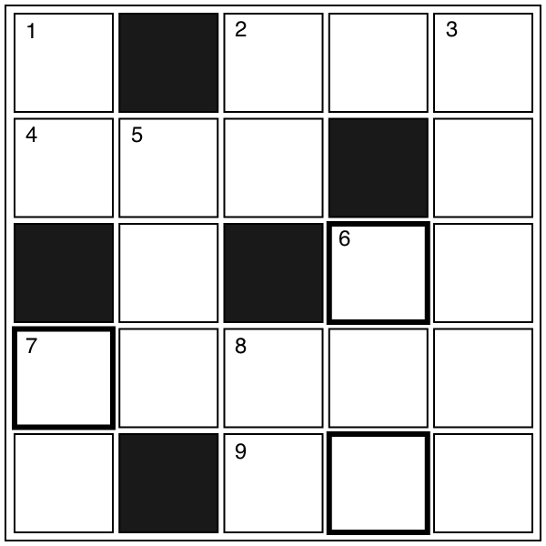

【→ PDF（印刷用）】

- タテのカギ
-
- １. 犬を飼ったり物置にしたりする小さな建物。
- ２. ○○ビール。○○づめ。
- ３. 12月24日は○○○○○イブ。
- ５. 窓を開けて部屋の○○○をする。
- ６. カードを使った遊びの一種。
- ７. 寝ているときに見るもの。
- ８. 「こんなことをしたのは○○だ！」
- ヨコのカギ
-
- ２. スピードをあげること。
- ４. お湯をわかすときに使う道具。
- ６. 必要なものをとった後に残る不要な部分。
- ７.

- ９. サラダで食べることの多い野菜。
【→ 解答を見る】